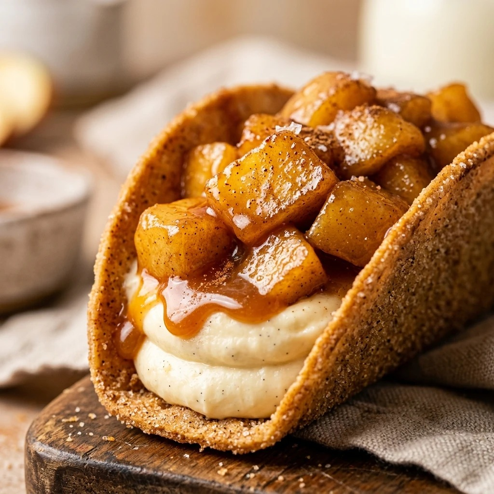

Caramel Apple Cheesecake Tacos Recipe
October 17, 2026

Imagine the crunch of a cinnamon-dusted taco shell meeting the silky smoothness of cheesecake filling, all topped with warm, spiced apples and a drizzle of buttery caramel. Caramel Apple Cheesecake Tacos are the ultimate dessert mashup that brings together the best parts of a fairground treat and an elegant pastry. They are fun to eat, beautiful to look at, and even better to share with friends and family.
Recipe Information
Prep Time: 20 minutes
Cook Time: 10 minutes
Total Time: 30 minutes
Servings: 8 tacos
Difficulty Level: Medium
Nutrition Information
Calories per serving: 325 kcal
Protein: 4g
Carbohydrates: 42g
Fat: 16g
Fiber: 2g
Sugar: 26g
Sodium: 215mg